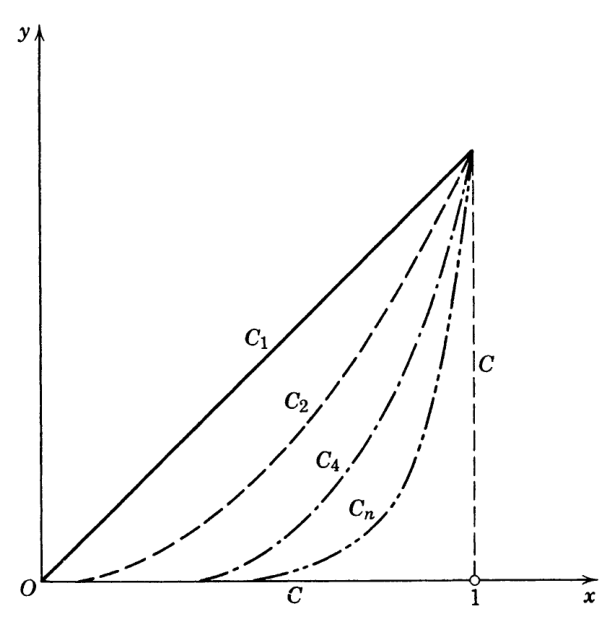

前面曾多次强调，极限过程既可用比较简单的数来近似已知的数，也可把已知的数系扩大成更广的数系。在分析学中，除了研究由常数组成的数列或无穷级数的极限，研究函数列的极限、研究以变量 x 的函数为项的级数，也同样有决定性的意义。泰勒级数以及一般的幂级数就是例子。用简单函数逼近给定函数需要这类极限过程，定义新的函数、给出它们的解析表达式，也往往须借助函数列极限 f(x)=limn→∞fn(x)。等价地，可把 f(x) 看成函数项级数 ∑ν=1∞gν(x) 的和，把 fn(x) 看作它的部分和；只须令 g1(x)=f1(x)，并在 n>1 时令 gn(x)=fn(x)−fn−1(x)。
下面给出精确的定义及其几何解释。
a. 函数与曲线的极限过程
定义。 若对区间 a≤x≤b 的每一点 x，数值 fn(x) 都在通常意义下趋于 f(x)，就说函数列 f1(x),f2(x),… 在该区间收敛于极限函数 f(x)，记作 limn→∞fn(x)=f(x)。根据柯西准则（第 75 页），也可不借助 f(x) 描述收敛性。函数列收敛于某个极限函数的充要条件是：对区间中每一点 x 和每个正数 ϵ，只要 n,m 都足够大，即大于某个数 N，就有 ∣fn(x)−fm(x)∣<ϵ。通常 N=N(ϵ,x) 依赖于 ϵ 和 x，并随 ϵ 趋于零而增大。
我们早已多次遇到函数列的极限。例如，令有理数列 r1,r2,…,rn,… 趋于无理数 α，用 xα=limn→∞xrn 定义无理指数幂（x>0）。又如
ex=n→∞lim(1+nx)n,其中右边的逼近函数 fn(x) 是 n 次多项式。
函数用曲线作图表示，因而也很自然地会说到曲线列的极限。例如，可以把上述极限函数 xα、ex 的图像，分别看成 xrn 和 (1+x/n)n 的图像的极限曲线。然而，对函数取极限和对曲线取极限有一层微妙的区别，直到十九世纪中叶才被清楚认识。先举一例说明，下一节再系统讨论。
在区间 0≤x≤1 上取 fn(x)=xn，n=1,2,…。这些函数都连续，极限函数 f(x)=limn→∞fn(x) 也存在。可是 f 不连续。因为所有的 fn(1)=1，所以 f(1)=1；对每个 0≤x<1，由第一章第 65 页可知 f(x)=limfn(x)=0。这个函数只在 x=1 时取值 1，在区间其余各点均取 0。

图 7.3 极限曲线与极限函数。
不连续性的几何表现可以从曲线 Cn（即 y=fn(x) 的图像）看出。它们都连续，经过原点和点 (1,1)，而且随 n 增大愈来愈贴近 x 轴（见第 66 页图 1.44）。这些曲线的确有一条极限曲线 C，它由从 x=0 到 x=1 的那段 x 轴和直线 x=1 上从 y=0 到 y=1 的线段连成（图 7.3），整条曲线连续。于是曲线列趋于一条带有竖直线段的连续曲线，函数列却趋于一个不连续函数。函数极限的间断正表现为极限曲线出现了垂直于 x 轴的一段。这条曲线不能作为极限函数的图像：在竖线所在的横坐标处，曲线给出无穷多个 y 值，函数只给出一个。可见，fn(x) 的图像的极限，与极限函数 f(x) 的图像可以不同。无穷级数当然也有相应的说法。
译者注 若固定 x<1，就只能看到 xn→0。要找到极限曲线竖直段上高度为 0<y<1 的点，可以随 n 改变横坐标，取 xn=y1/n。于是 (xn,xnn)=(y1/n,y)→(1,y)。两种极限的区别在于取极限时是否固定横坐标。